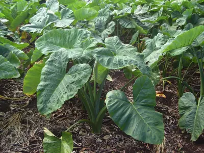

pranet · 出典付きの植物図鑑
arrowleaf elephant's ear ☠
Xanthosoma sagittifolium (L.) Schott · Araceae

Xanthosoma sagittifolium, or tannia, is a tropical flowering plant from the family Araceae. It produces an edible, starchy corm. X. sagittifolium is native to tropical America where it has been first cultivated. Around the 19th century, the plant spread to Southeast Asia and Africa and has been cultivated there ever since. X. sagittifolium is often confused with the related plant Colocasia esculenta (taro), which is similar both in appearance and its uses. Both plants are often collectively named 'cocoyam'.
出典: Wikipedia 英語版「Xanthosoma sagittifolium」 · CC BY-SA 4.0
異名: Alocasia alboviolacea Veitch ex J.Dix, Alocasia talipan Elmer ex Merr., Arum nigrum Vell., Arum sagittifolium L., Arum xanthorrhizon Jacq., Caladium edule G.Mey., Caladium mafaffa Engl., Caladium sagittifolium (L.) Vent., Caladium utile Engl., Caladium xanthorrhizon (Jacq.) Willd., Philodendron nigrum Kunth, Xanthosoma appendiculatum Schott, Xanthosoma atrovirens K.Koch & C.D.Bouché, Xanthosoma aureum E.G.Gonç., Xanthosoma edule (G.Mey.) Schott, Xanthosoma ianthinum K.Koch & C.D.Bouché, Xanthosoma jacquinii Schott, Xanthosoma maculatum G.Nicholson, Xanthosoma mafaffa Schott, Xanthosoma monstruosum E.G.Gonç.
同定や利用は自己責任でお願いします。この図鑑だけを根拠に野生の植物を食べないでください。
出典
- 学名: World Flora Online Plant List 2026-06 · CC0 1.0
- 名前: Wikipedia の記事名と Wikidata · CC0 1.0（Wikidata）。記事名は事実
- 説明: Wikipedia 英語版「Xanthosoma sagittifolium」 · CC BY-SA 4.0
- 食用・毒性: World Checklist of Useful Plant Species (Diazgranados et al. 2020, RBG Kew) · CC BY 4.0
- 分布: World Checklist of Vascular Plants (WCVP), RBG Kew, version 2026-06-04 · CC BY 3.0
このページは pranet のデータから自動生成しています。コードは MIT、データは項目ごとのライセンス（説明）。